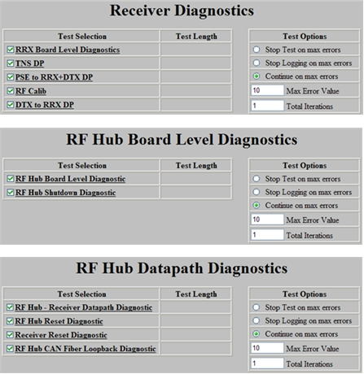
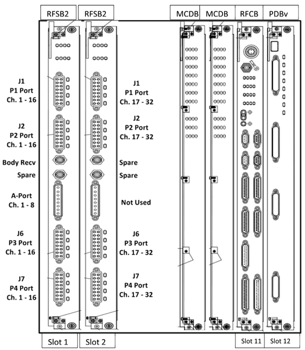

Proprietary to General Electric Company
Direction 5670006, Rev# 1
Discovery MR750w GEM Service Methods
Module Version 3.0, Version Date 10/11/11
Proprietary to General Electric Company |
A typical receive chain fault looks like the following example.

Use the Multicoil Bias Tool to confirm faulted channels. (Troubleshooting > Diagnostics > Hardware Location > Magnet Room)
Use the Coil Datapath Diagnostic (CDD), which uses the MCRv Tool to isolate Receive Chain components. (Troubleshooting > Diagnostics > Hardware Location > Magnet Room)
Use MCQA to identify Coil image quality issues.
 | Depending on the fault troubleshooting, use the appropriate diagnostics to help isolate the root cause.
|
Inside RFSB:
Inside MCDB:
Inside RFCB:
Inside PDBv:
|  |

Symptom: Poor image quality or low SNR using 8 HR Brain Coil
Scanning a phantom in GESERVICE Mode - using the saveinter CV to view all intermediate images as well as the combined image (9 images in total) - indicates that image 4 has no (or little) signal.
The 8 HR Brain Coil uses the Legacy “A-Port” connector. On a System that does not have a reroute box, this connector connects directly to the RFSB in Slot 13.
Use the MCRv tool to decide if the Coil or receive chain is suspect. If the MCRv tool is not readily available, use another 8 channel coil that uses the “A-Port”.
If you have decided that the coil is good, and the issue is somewhere within the RRX Chain:
Swap both cables (J1 and J2) between Receiver 1 and Receiver 2.
Re-scan the 8 HR Brain coil using the saveinter CV.
If the failing image now is GOOD and all 8 intermediate images look good, suspect Receiver 1.
If the failing image is still BAD, The Receiver is good. Suspect the RFSB.
Swap RFSB1 with RFSB 2.
Re-scan the 8 HR Brain coil using the saveinter CV.
If the Failing image now is GOOD, all 8 intermediate images look good, suspect the RFSB 1 Board.
If the failing image is still BAD, Call your Support Team member or OLC for additional help.
During every TPS reset, the RRX Chain runs a loopback test to calibrate each Receive Channel for each R1 setting.

The loopback test stores a log file in the /usr/g/service/log directory.
The log file is named r1GainCal_date.dat (for example, r1GainCal_2011Sep14_12_28_42.dat).
For each R1 Value, for each channel, the measured Energy drops by 3db ± 0.5db. If a Channel falls outside the tolerance, the Pass/Fail Column will indicate Fail for that Channel. No entry indicates Pass.

The log file continues to R1 value = 1.
Example:
Review the Loopback Cal file:
Open a C-shell.
Type ls -altr r1Gain*.
This command will list all of the R1GainCal files with the most current file shown on the last line.
Display the contents of the log file (use more, gedit, or view to display the contents of the file).
Diagnosing the Issue:
The example file above shows Channel 6 fails for both R1 of 13 and R12. (In this case, channel 6 fails for all R1 values. The remainder of the log file is not shown.)
During R1GainCal loopback, the same exciter signal is distributed across all channels. Having only one channel fail suggests the Exciter is NOT the issue.
The RFSB is responsible for setting correct R1 values, therefore the RFSB would be suspect. However, it is best to run Diagnostics and follow the same troubleshooting steps shown in Section 5 to confirm.
Run the RF Hub Receiver Data Path Diagnostic to see if there is a stuck address bit of LUT. Another option is to run RRX Board Level Diagnostics to see if there is a bad channel on the RRx module.
If the system is experiencing intermittent Multicoil Bias faults, try running a scan with and without RF enabled to see if there is any difference. There may be noise getting into the bias lines (possibly from a loose quick disconnect).